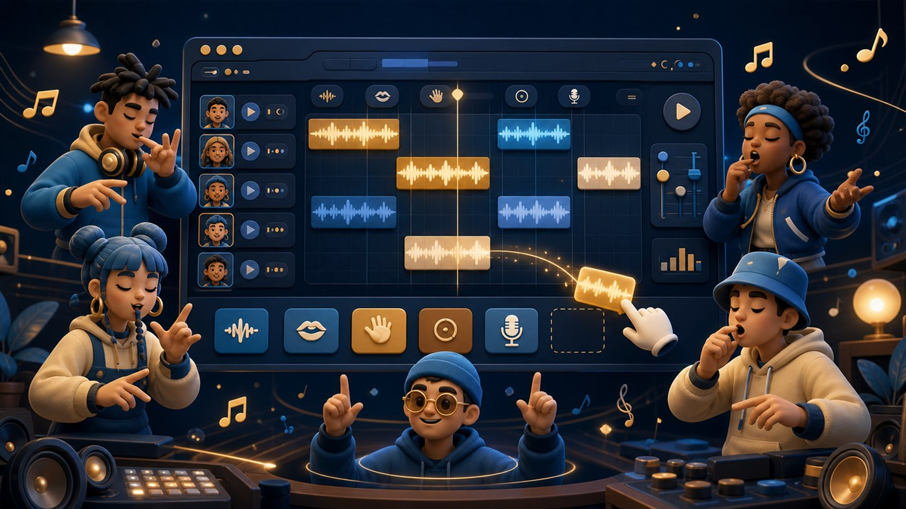

Site interessante / Música interativa
Incredibox: o site em que você monta uma banda de beatbox em poucos cliques
O Incredibox é aquele tipo de site que parece simples por fora, mas prende a atenção rápido: você escolhe um estilo musical, arrasta ícones para personagens animados e, de repente, tem uma mistura de batidas, efeitos, melodias e vozes funcionando como se uma pequena equipe de beatbox tivesse entrado no navegador.
A graça está no ritual de experimentar. Um som entra, outro sai, um refrão animado aparece quando a combinação encaixa, e a composição vira uma brincadeira musical sem cara de aula chata. É parte ferramenta, parte jogo, parte “vou testar só por dois minutos” e quinze minutos depois você ainda está ajustando o grave.
Arraste e solteMonte a música colocando sons nos personagens.
Grave o mixQuando gostar do resultado, salve e compartilhe.
Sem pressãoFunciona como playground musical para todas as idades.